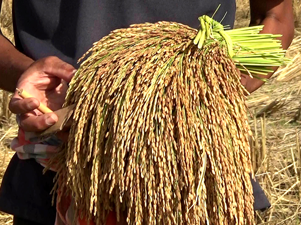

กำเนิดข้าวเบายอดม่วง
Origin of Khao Bao Yod Muang
"ข้าวเบายอดม่วง" ไม่ใช่เพียงแค่พืชผลทางการเกษตร แต่คือลมหายใจและจิตวิญญาณของชาวนาเมืองตรังที่สืบทอดกันมากว่า 100 ปี ข้าวพันธุ์นี้มีถิ่นกำเนิดดั้งเดิมที่ปรับตัวเข้ากับสภาพภูมิอากาศแบบ "ป่าฝน" ของเทือกเขาบรรทัด
"Khao Bao Yod Muang" is not just an agricultural product, but the breath and soul of Trang farmers passed down for over 100 years. This variety originated and adapted to the "rainforest" climate of the Banthat Mountain Range.
ชื่อ "เบายอดม่วง" มีที่มาจากลักษณะเด่น 2 ประการ:
The name "Bao Yod Muang" comes from two distinct characteristics:
-
เบา: หมายถึงข้าวนาปีที่ใช้ระยะเวลาปลูกสั้น เก็บเกี่ยวเร็ว
Bao (Light): Refers to seasonal rice with a short planting period and quick harvest.
-
ยอดม่วง: เมื่อข้าวเริ่มสุกแก่ เปลือกเมล็ดจะเปลี่ยนจากสีเขียวเป็น "สีม่วงเข้ม" หรือสีแดงก่ำ คล้ายกับยอดอ่อนของมะม่วงเบา เป็นภาพที่สวยงามตระการตาเต็มท้องทุ่ง
Yod Muang (Purple Top): When ripening, the husk changes from green to "deep purple" or dark red, resembling young mango shoots, creating a stunning view across the fields.
"คนเฒ่าคนแก่เล่าว่า ข้าวที่อร่อยที่สุดของเมืองตรังต้องยกให้ข้าวเบายอดม่วง ด้วยรสชาติที่นุ่มหนึบและกลิ่นหอมที่ไม่เหมือนใคร"
"Elders say the best-tasting rice in Trang is Khao Bao Yod Muang, with its unique soft, chewy texture and distinct aroma."

ภูมิปัญญา "แม่รวง"
The "Mae Ruang" Wisdom
เคล็ดลับความอร่อยที่คงที่ของข้าวเบายอดม่วงอยู่ที่กระบวนการคัดเลือกเมล็ดพันธุ์ที่เรียกว่า "การคัดแม่รวง" ซึ่งเป็นภูมิปัญญาชาวบ้านที่ถ่ายทอดจากรุ่นสู่รุ่น
The secret to the consistent deliciousness of Khao Bao Yod Muang lies in the seed selection process called "Mae Ruang Selection", a local wisdom passed down through generations.
ชาวนาจะสังเกต "กอข้าว" ที่สมบูรณ์ที่สุดในแปลงนา โดยมองหา "หน่อแรก" หรือรวงที่สูงที่สุด แข็งแรงที่สุด และเมล็ดเต่งตึงที่สุด รวงข้าวนั้นจะถูกผูกสัญลักษณ์ไว้และเก็บเกี่ยวแยกต่างหากด้วยความทะนุถนอม เพื่อใช้เป็น "เชื้อพันธุ์" ในปีถัดไป
Farmers observe the most perfect "rice clump" in the field, looking for the "first sprout" or the tallest, strongest ear with the plumpest grains. That ear is marked and harvested separately with care to be used as "seed stock" for the next year.
ทำไมต้องทำแบบนี้?
Why do this?
เพราะข้าวเบายอดม่วงเป็นข้าวที่มีความแปรปรวนทางพันธุกรรมได้ง่าย หากไม่คัดแม่รวง ข้าวอาจจะกลายพันธุ์ เมล็ดลีบ หรือสีไม่สวย การคัดแม่รวงจึงเป็นการ "ตรึง" ความอร่อยและคุณภาพให้คงอยู่ตลอดไป
Because Khao Bao Yod Muang is genetically variable. Without Mae Ruang selection, the rice might mutate, have flat grains, or poor color. Mae Ruang selection "locks in" the deliciousness and quality forever.
วิถีแห่งศรัทธาชุมชน
Way of Community Faith
ที่นาพละ การทำนาไม่ใช่แค่อาชีพ แต่คือวิถีชีวิตที่ผูกพันกับศรัทธา เมื่อถึงฤดูเก็บเกี่ยว ชาวนาจะไม่นำข้าวไปขายหรือกินทันที แต่ต้องผ่านพิธี "รับขวัญข้าวใหม่" เสียก่อน
At Na Phla, farming is not just a career, but a way of life tied to faith. When harvest season arrives, farmers don't sell or eat the rice immediately but must go through the "Rice Blessing" ceremony first.
ในช่วงเดือนกุมภาพันธ์-มีนาคม ชาวบ้านจะพร้อมใจกันนำข้าวเปลือกที่เก็บเกี่ยวใหม่ๆ มาถวายวัด ทำบุญตักบาตร เพื่ออุทิศส่วนกุศลให้บรรพบุรุษและขอบคุณพระแม่โพสพที่ช่วยดูแลรักษาต้นข้าว
During February-March, villagers come together to offer newly harvested rice to the temple, making merit to dedicate goodness to ancestors and thank the Rice Goddess for protecting the crops.
นอกจากนี้ยังมีประเพณี "ลากพระ" ในเดือนตุลาคม ที่แสดงถึงความสามัคคีของคนในชุมชนที่มาร่วมแรงร่วมใจลากเรือพระ เป็นภาพที่สะท้อนว่า "ข้าว" และ "คน" ในนาพละ แยกจากกันไม่ได้
There is also the "Chak Phra" (Pulling the Monk) tradition in October, showing the unity of the community joining forces to pull the monk boat, reflecting that "Rice" and "People" in Na Phla are inseparable.
ความภูมิใจสู่มาตรฐาน GI
Pride in GI Standards
จากข้าวพื้นบ้านสู่การยอมรับระดับชาติ ข้าวเบายอดม่วงตรัง ได้รับการขึ้นทะเบียนเป็น สิ่งบ่งชี้ทางภูมิศาสตร์ (GI) ทะเบียนเลขที่ สช 66100212
From local rice to national recognition, Trang's Khao Bao Yod Muang is registered as a Geographical Indication (GI), Registration No. SorChor 66100212.
นี่คือเครื่องการันตีว่า ข้าวเบายอดม่วง ซึ่งมีลักษณะพิเศษ ต้องปลูกในพื้นที่จังหวัดตรังเท่านั้น ด้วยสภาพดินเหนี่ยวปนทราย มีฝนตกชุกทั้งปีและในช่วงฤดูน้ำหลากจะพัดพาตะกอนจากเทือกเขาบรรทัดซึ่งเป็นอินทรีย์วัตถุและแร่ธาตุต่างๆมาสะสมเป็นสารอาหารที่มีประโยชน์ในทุ่งนา ชาวตรังจะเรียกว่า "มายา" ส่งผลให้ข้าวเจริญเติมโตได้เร็ว เมื่อหุงสุกแล้วมีรสชาติดี หอมมีเอกลักษณ์ เหนียวนุ่ม เคี้ยวมัน น่ารับประทาน
This guarantees that Khao Bao Yod Muang has special characteristics and must be grown in Trang province only. With sandy clay soil, year-round rain, and sediment from the Banthat Mountain Range during flood season—locally called "Maya"—accumulating as beneficial nutrients, the rice grows fast. When cooked, it tastes good, has a unique aroma, is soft, chewy, oily, and delicious.
-
โปรตีนสูงกว่าข้าวทั่วไป
Higher protein than general rice
-
ดัชนีน้ำตาลต่ำ เหมาะกับคนรักสุขภาพ
Low glycemic index, suitable for health lovers
-
สารต้านอนุมูลอิสระสูง ช่วยชะลอวัย
High antioxidants, helps slow down aging